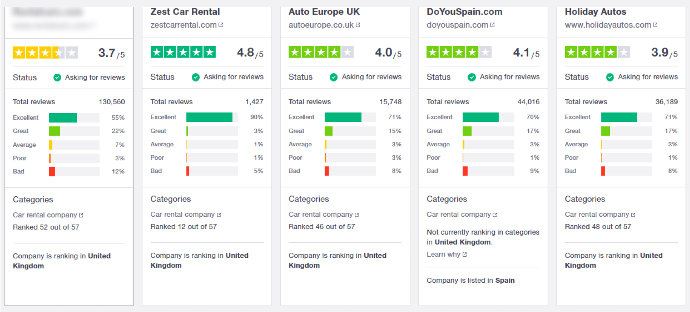
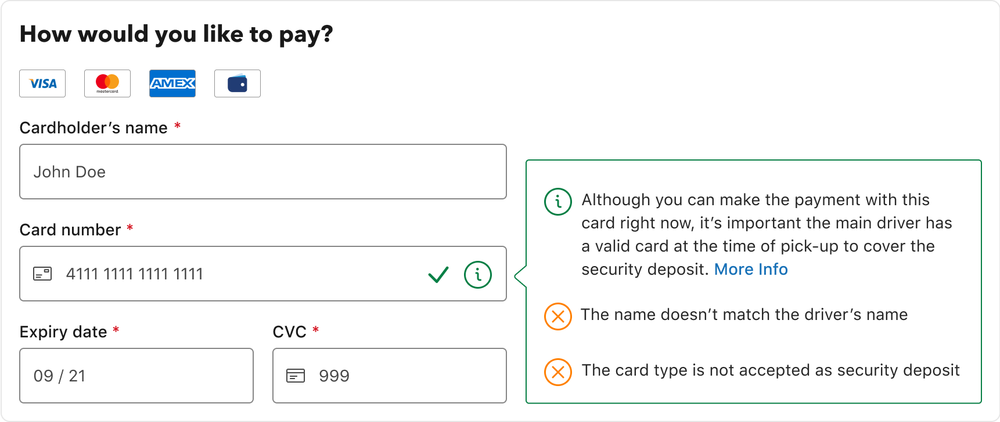
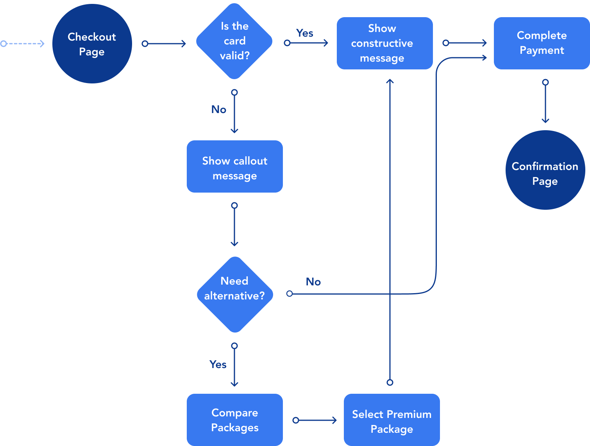

Context: One of the travel brands I worked for (the name will be blurred as the study might contain negative publicity) is an aggregator of car rentals which works with the biggest suppliers in the sector. As a requirement, often the driver must present a credit card to cover for the security deposit.
When: Q3 2021
My responsibilities:
Problem: Due to misinformation about what types of cards are accepted for the security deposit, customers often face friction at the time of pick-up when they present a card that is not suitable. As a consequence, the local supplier can refuse the rental and customers will lose some of the amount paid, as well as having to find an alternative solutions on the spot.
This led to 69 “1 star” reviews under “No valid credit card” which contributed to having a Trust Pilot score of 3.7/5 at the end of Q2 2021.
Business goal: Increase the Trust Pilot score by reducing the most recurrent issues flagged by customers.
Results: Boosted revenue thanks to a 10% increase of "Premium Package" upsell. New Trust Pilot score to be reviewed at the end of Q4.
At the start of July 2021 the Trust Pilot report for the first half of the year was published by our CS Analytics Team.
From the report I extracted the top 10 issues. The first topic which was identified as an area of improvement by the leadership team was “No valid credit card”. The assumption is that by reducing this issue, indirectly the “Unhappy with Cancellation Fee” will also go down. This is because refused rentals get cancelled with a fee.
As a result the score at the end of Q2 2021 was the lowest amongst our competitors:
To understand the impact Trust Pilot reviews can have on the business I consulted with a researcher to see if any research has been done in the past around the importance of online reviews.
Key learnings:
Online reviews play a big part in this so having the lowest score amongst our competitors can be harmful for the brand.
To find out more about the credit card problem I invited some of our Customer Service Specialists to talk about their experience with customers who faced this problem in the past.
Key learnings:
Let’s see how the current user journey looks like and how the credit card terms are placed.
There are 4 different entry points to access the terms & conditions in the user journey. These terms are often placed in a modal like in the video below:
To have an idea of how customers currently interact with the terms and conditions, I set up Hotjar and observed 20 different video recordings of users completing the booking journey.
Key learnings:
For the ideation brainstorm I organised a workshop where I invited other designers, POs and developers to write down their ideas.
Similar ideas were grouped together to eventually converge into 3 main ideas.
”Automatic card check” was identified as the idea to pursue based on some useful considerations. The technical feasibility check also passed as the system can recognise card types based on the first 6 digits, known as BIN (Bank identification number) codes.
The very first draft I created featured a tooltip that reassures the user they can use the card inserted for the payment but also informs them if the card is not accepted by the local supplier for the security deposit.

This went through a feedback session with a Senior Designer who suggested to double check if we already had a pattern in our design system that would accommodate this type of message rather than creating a new pattern.
For the final design I used an alert component from our design system. The message also suggests to take the "Premium Package" as an alternative for users who don't own a credit card.
This solution should resolve cognitive overload issues as it’s separated from the full terms and conditions. Also, according to the Serial position effect, users tend to forget information placed in the middle of a process or sequence. Placing important information at the end should be more memorable.
At checkout, a constructive message will display if the card inserted is valid for the security deposit, otherwise the callout message will be triggered.
 The messages will display either when the user selects a card stored in the browser or when they finish typing the 16 digits. A few milliseconds delay is applied to give the user the chance to look back on the screen.
The video below shows an example of a user inserting a card which is not valid for the security deposit:
10 participants were invited to a remote moderated usability study and were tasked to show and explain out loud how they would normally go about renting a car online.
Key learnings:
The solution was handed over to developers who conducted a 3 week split test in European countries to monitor conversion.
The conversion was slightly lower than the control version but noticed a 10% "Premium Package" upsell increase for the variant.
The solution went “fully-on” for desktop in Q4 2021 and as of November 2021, we noticed: